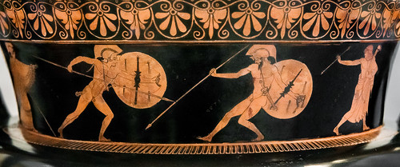
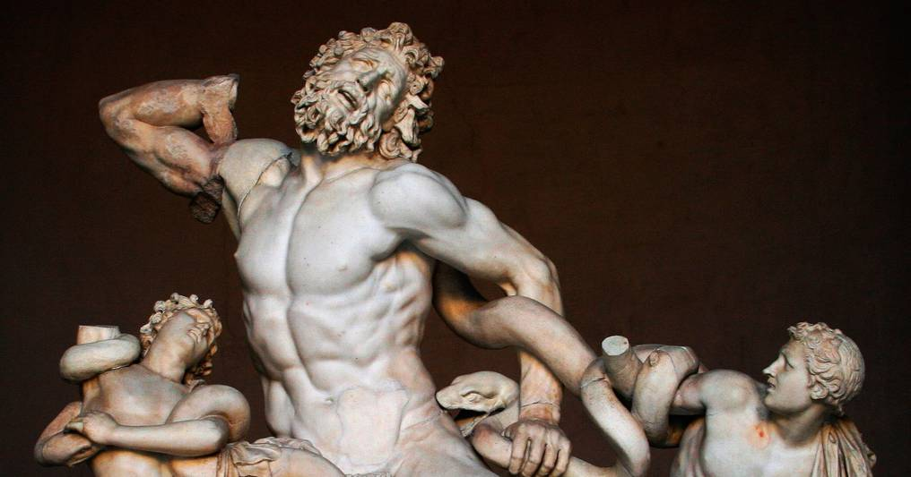
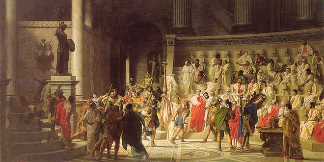
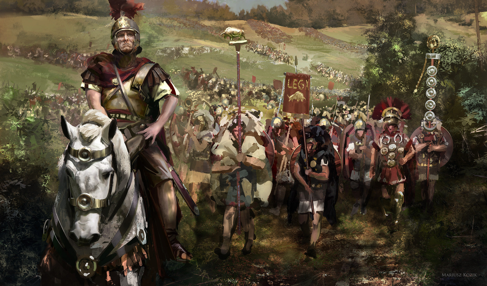

Por lo general, cuando nos referimos a la Época Clásica o a la Antigüedad Clásica, hablamos de un período de la historia ubicado entre la Alta Antigüedad (cuando aparecieron las primeras civilizaciones de Oriente Próximo Antiguo) y la Baja Antigüedad (la transición hacia la Edad Media).
La época clásica comienza en el siglo V a. C., con el fin de la guerra entre las ciudades-Estado de la Grecia Antigua y el Imperio Persa. Los ejércitos griegos obtuvieron la victoria ante el invasor persa. Así se fundó un nuevo sentimiento de grandeza y de confianza cultural entre sus habitantes. Dependiendo de las fuentes consultadas, este inicio puede considerarse aún más temprano, en el siglo VIII a. C., con la mítica fundación de Roma en el año 753 a.C. De modo similar, la época clásica culmina en el siglo V d. C., con la Cristianización del Imperio Romano de Occidente, su caída y desmembramiento frente a las tribus bárbaras del norte y este de Europa. A partir de entonces se da inicio a la Edad Media.
La Grecia Clásica (de 510 a 330 a. C.)

Este es el período de mayor esplendor de la cultura griega antigua. Comienza con la caída de la tiranía en Atenas, ciudad que luego llegó a ser la más importante de todas las ciudades-Estado que componían la civilización griega. Así se dio nacimiento a la democracia ateniense, el más antiguo ejemplo de una democracia directa entre ciudadanos (varones, griegos y mayores de edad, claro está). Con ella se sentaron las bases para la era dorada conocida como el Siglo de Pericles (444-404 a. C.). Sin embargo, surgieron problemas cuando Atenas se involucró en los conflictos territoriales entre Corcira y Corinto. Como esta última era aliada de Esparta, se desató la cruenta Guerra del Peloponeso de 27 años de duración (431-404 a. C.). En ese conflicto se enfrentaron las dos ligas militares griegas: la de Delos, liderada por Atenas, y la del Peloponeso, liderada por Esparta.
El período helenístico (de 330 a 146 a. C.)

El reino de Macedonia se encontraba bajo el mando de Filippo II y luego de su hijo, el célebre Alejandro Magno. Comenzó su conquista de las ciudades griegas en 346 a. C., dando origen al Imperio Macedónico que se extendió sobre los dominios de Grecia, Egipto, India, Persia y Asia Central. En este período se impuso la koiné como lingua franca en todos los territorios. Era una suerte de lengua griega que permitió una expansión cultural que se tradujo en enormes avances en la filosofía (sobre todo a partir de los seguidores de los clásicos Platón y Aristóteles) y en las ciencias y técnicas. Por el gran desarrollo del imperio bajo Alejandro Magno, también se conoce esta época como Período Alejandrino. Ciudades como Alejandría, Pérgamo y Antioquía gozaron de la importancia que antes tuvieron Atenas, Tebas y Esparta. La muerte de Alejandro Magno en el año 323 a. C. interrumpió el crecimiento vertiginoso de su imperio, que en apenas 13 años pasó de ser una pequeña nación balcánica al Imperio más grande de la Antigüedad. No teniendo herederos en edad de asumir el trono, el gobierno recayó sobre sus generales, conocidos como diádocos, quienes iniciaron una serie de prolongados enfrentamientos políticos que terminaron por dividir el Imperio.
La República Romana (de 509 a 27 a. C.)

Al mismo tiempo, los romanos emergían como civilización tras la derrota de sus monarcas en el siglo V. Se convirtieron en una potencia unificadora de todos los reinos cuyo territorio hoy compone el de Italia, luego de imponerse en las guerras samnitas, las guerras latinas y las guerras pírricas. Así, los romanos establecieron su dominio sobre el Mediterráneo occidental. Tuvieron que enfrentarse con Cartago en las guerras púnicas (del año 264 al 146 a.C.) a la par que con el Reino de Macedonia, en las guerras macedónicas (del año 214 al 148 a. C.). La victoria romana en ambos conflictos cimentó las bases del Imperio Romano que nació en el año 27 a. C. y se caracterizó por su gobierno autocrático.
El Imperio Romano (de 27 a. C. a 476 d. C.)

La última etapa de la Época Clásica se centra en el Imperio surgido a raíz de las victorias de Roma sobre Grecia, Macedonia y Cartago. A finales del siglo I a. C. el Imperio Romano se convirtió en la potencia dominante de todo el Mediterráneo, el norte de África, Europa central y occidental, y el Medio Oriente. En el año 117 el Imperio alcanzó su mayor extensión territorial, gracias a su ejército indetenible y a la ambición de una larga sucesión de dinastías autocráticas, que llegaron a dividir y unificar el imperio en diversas oportunidades. La cultura romana heredó de Grecia su imaginario y sus riquezas culturales. Sin embargo, renombraron a dioses y conceptos en latín, hallándole equivalencias en su propia tradición. Así, la filosofía, las artes y el pensamiento continuaron su crecimiento hasta la decadencia del Imperio, cuando el naciente cristianismo impuso en su lugar el imaginario semítico y el monoteísmo como doctrina.